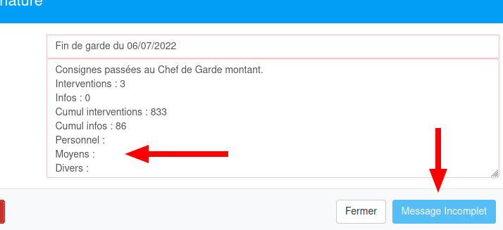
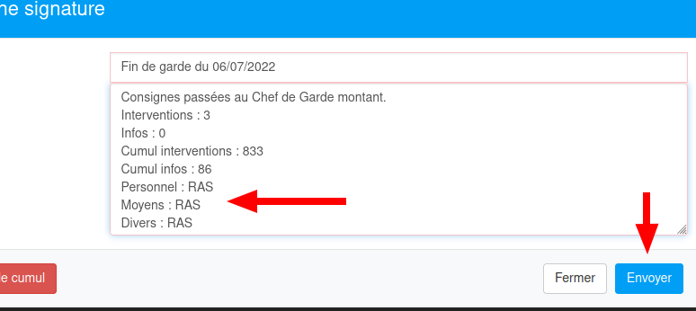

Utilisation
Fonctionnement normal
Par défaut, l'extension va rechercher la dernière signature de fin de garde "valide" (c'est-à-dire dont le texte respecte le format standard de cette extension).
Le format standard en question est le suivant:
Consignes passées au Chef de Garde montant.
Interventions : [un nombre]
Infos : [un nombre]
Cumul interventions : [un nombre]
Cumul infos : [un nombre]
Personnel : [un mot ou texte]
Moyens : [un mot ou texte]
Divers : [un mot ou texte]
L'extension comptera ensuite le nombre d'interventions et d'informations depuis la dernière signature valide et l'ajoutera au total issu de la signature trouvée.
Le texte généré s'affiche dans la fenêtre de signature (pendant que l'extension fait ses recherches, un message invitant à patienter est affiché, et le bouton d'envoie de la signature est renommé en "Message incomplet" et il est rendu inactif) :
Une fois le texte généré, il n'est toujours pas possible de valider la signature, car il faut ajouter les informations sur les lignes vides (Personnels, Moyens, Divers).
Le texte peut être n'importe quoi, il faut juste qu'il soit présent. "RAS" par exemple s'il n'y a rien de spécial à indiquer.
Quand les 2 lignes vides sont remplies, le bouton de validation est renommé en "Envoyer" et il redevient actif afin de valider la signature.
Note: il est toujours possible de modifier manuellement les chiffres fournis par l'extension avant de valider.
Fonctionnement avancé
Pour différentes raisons il peut être nécessaire de recompter les interventions et informations depuis le début de l'année.
Par exemple, si c'est la première fois que l'extension est utilisée, elle peut ne pas trouver de signature valide dans l'historique de la main courante (en pratique, le format standard est issu de message déjà existant donc même la première fois que l'extension est utilisée elle devrait fonctionner en mode par défaut)
Un autre cas plus probable est s'il y a eu des erreurs de comptage pendant l'année.
Dans ce cas, il faut utiliser le bouton  qui va
recompter toutes les interventions et informations depuis le début de l'année.
qui va
recompter toutes les interventions et informations depuis le début de l'année.
Cette action est un peu plus longue (quelques minutes).
En cliquant sur le bouton, une fenêtre de confirmation apparait:
Vous pouvez soit annuler l'action, soit valider, auquel cas le calcul commence
Pendant le calcul, la fenêtre de signature affiche un message dynamique indiquant où en est le calcul et le bouton de validation de la signature continue d'afficher "Message Incomplet" et reste inactif:
Une fois le calcul terminé, le message généré apparaît dans la fenêtre et la marche à suivre est la même que pour le fonctionnement par défaut (renseigner un texte pour le Personnel et les Moyens)
Problèmes possibles
Actions correctives
J'ai essayé de rendre cette extension la plus solide possible. Malheureusement, n'ayant pas accès au code d'inspyre les moyens sont limités et les problèmes peuvent arriver.
De manière générale, s'il y a un problème (exemple : la fenêtre de signature ne s'affiche pas, ou le calcul ne se lance pas, ou un bouton n'apparaît pas/reste inactif)
la première action à mener est de: RECHARGER LA PAGE (touche F5 du clavier)
Si cela ne résout pas le soucis et que ça empèche de remplir la signature de fin de garde, 3 options:
- Soit le plus simple : utiliser un autre navigateur (Chrome, Internet Explorer, Edge, etc.) qui n'a pas l'extension installée dessus.
- Soit utiliser un ordinateur du CS qui n'a pas l'extension installée, soit la session windows de quelqu'un d'autre qui n'a pas installé l'extension ou bien un téléphone portable.
- Soit, plus compliqué : désactiver l'extension.
Pour désactiver l'extension, il faut se rendre dans le menu des extensions de firefox. Pour cela, cliquez sur ce lien: Menu des extensions (ce lien peut ne pas marcher selon votre navigateur) ou bien rentrez dans la barre d'adresse `about:addons` et valider:
Puis trouvez l'extension InspireHelper et cliquez sur le bouton de désactivation :

Puis revenez sur Inspyre et rechargez la page (touche F5). L'extension étant désactivée, vous reviendrez au fonctionnement "standard" d'inspyre.
IMPORTANT: merci de me prévenir et de me décrire le problème rencontré afin que je puisse le corriger (contactez-moi directement, par Whatsapp, ou par mail : francois.deguibert@sdis78.fr
problèmes connus et solutions
Lorsqu'on lance un calcul du cumul depuis le début de l'année, puis qu'on ferme la fenètre de signature avant la fin, puis rouvre la fenêtre, l'extension ne se redéclenche plus
Solution: recharger la page (touche F5)
-
Lorsqu'on lance un calcul de cumul depuis le début de l'année, il arrive que la Main courante affiche le panneau "Pas d'évènements pour cette date." sous la fenètre de signature (et que ce panneau reste, même en fermant la fenêtre de signature).
Explication: l'extension effectue une demande par jour à retrouver au serveur d'inspyre. En milieu d'année, ça représente plusieurs centaines de requêtes et le serveur peut alors décider d'arrêter de mettre à jour la main courante.
A priori, ça n'empèche pas de valider la signature une fois le calcul du cumul terminé.Solution: validez tout de même la signature si vous le souhaitez, puis rechargez la page. Ou juste rechargez la page si vous avez fermé la fenêtre de signature.
Si jamais la signature n'a pas été prise en compte, relancez le calcul du cumul, attendez la fin, copiez le texte généré, fermez la fenêtre de signature et rechargez la page.
Puis rouvrez une fenêtre de signature et collez le texte avant de valider.